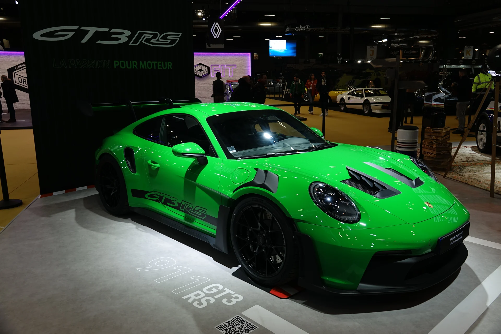
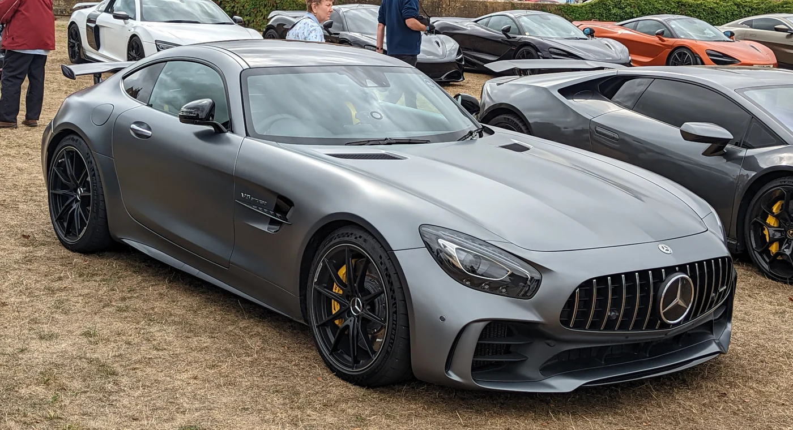
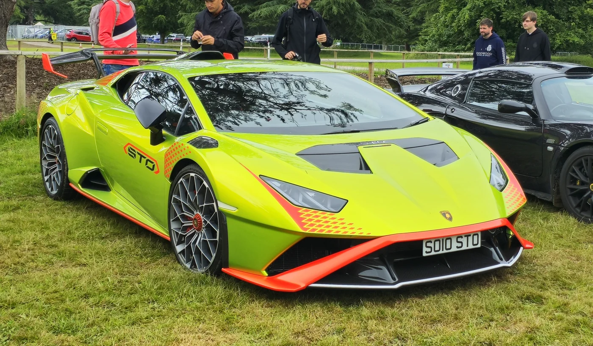
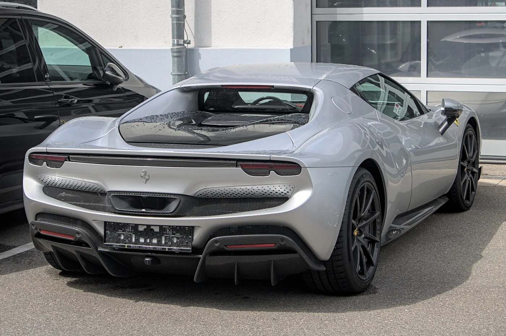
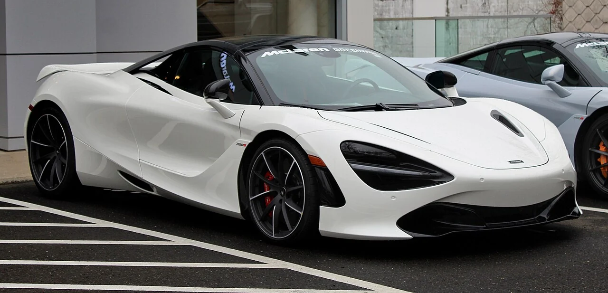
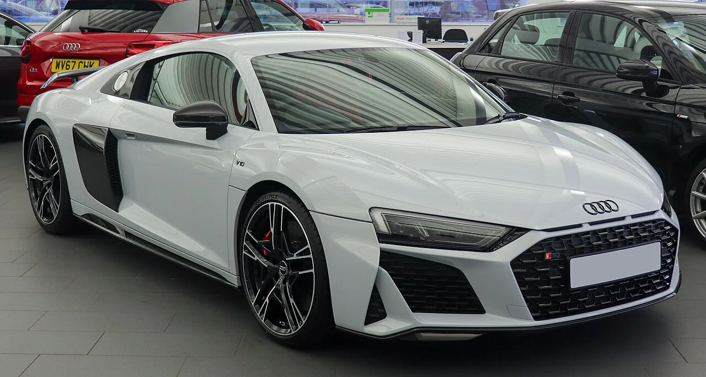

Porsche
911 GT3 RS
Výrazné křídlo, nezaměnitelná silueta. Design, ve kterém je závodní inspirace vidět na první pohled.
Prohlédnout zblízkaŠKOLNÍ PROJEKTTato stránka je fiktivní a slouží pouze pro výukové účely. Nejedná se o skutečný autosalon.

Výběr výjimečných automobilů
Objevte svět výjimečných automobilů, kde se precizní technika setkává s nadčasovým designem.
V hlavní roliPorsche 911 GT3 RS
VÝKON.
ELEGANCE.
BEZ KOMPROMISŮ.

01 O značce
Některé automobily vás dopraví do cíle.
Jiné vás přimějí zamilovat si cestu.
VOJTA MOTORS je fiktivní značka vytvořená z obdivu k automobilovému designu. Zajímá nás napětí mezi krásou a funkcí: linie karoserie, promyšlené detaily i osobitý charakter každého vozu.
Tato kolekce je školní studií digitálního autosalonu. Není nabídkou k prodeji, ale pozvánkou prohlédnout si šest různých podob automobilové výjimečnosti.
Poznejte naši kolekci02 Kolekce
Šest osobností. Společná vášeň.
Výběr automobilů, které spojují charakter, výkon a osobitý design.
Porsche
Výrazné křídlo, nezaměnitelná silueta. Design, ve kterém je závodní inspirace vidět na první pohled.
Prohlédnout zblízka
Lamborghini
Ostré linie a nepřehlédnutelný postoj. Expresivní pojetí sportovního automobilu bez vizuálních kompromisů.
Odvaha v každé linii
Ferrari
Plynulé křivky a soustředěný výraz. Italská představa elegance, která má sportovní charakter v každém detailu.
Italský cit pro proporceMercedes-AMG
Dlouhá kapota a sebevědomé proporce. Setkání klasické siluety sportovního kupé se současným designem.
Síla s elegancí
McLaren
Sochařské plochy a neobvyklé světelné podpisy. Automobil, jehož tvary vybízejí k pohledu z každého úhlu.
Forma s jasným účelem
Audi
Čisté linie a široký, nízký postoj. Charakteristická silueta, která nechává vyniknout samotné proporce.
Čistota sportovního designuFiktivní expozice. Zobrazené vozy nejsou skladem ani na prodej. Názvy modelů patří jejich příslušným výrobcům.
03 Ikona kolekce
Porsche / 911 GT3 RS
KDYŽ MÁ KAŽDÝ
DETAIL SVŮJ SMYSL.
Nízká příď. Výrazné průduchy. Dominantní zadní křídlo. Model 911 GT3 RS představuje v naší kolekci design, který svou inspiraci závodním světem neskrývá.
Právě propojení účelu a estetiky z něj dělá ústřední motiv tohoto projektu. Automobil jako technický objekt i vizuální zážitek.
04 Naše filozofie
Čtyři pohledy, které určují
charakter projektu VOJTA MOTORS.
Od návaznosti linií po nejmenší detail. Hledáme promyšlená řešení, která dávají celku smysl.
Fascinuje nás technika a její možnosti. Sportovní charakter vnímáme i v proporcích a výrazu vozu.
Krása, která má důvod. Oceňujeme souhru estetiky, funkce a osobitého rukopisu.
Automobily jsou naším tématem, zvědavost naším pohonem. Tento projekt vznikl z chuti tvořit.
05 Za projektem
VOJTA MOTORS není skutečný autosalon.
Je to školní projekt, ve kterém se potkává zájem o automobily s tvorbou webu. Další práci najdete v mém portfoliu.